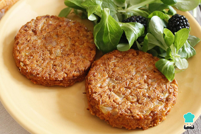

✨🌱Servicios🌱✨
La idea es que ser vegano no sea complicado, entonces ofrecemos un par de servicios, accesibles, entonces, escoge, y avísanos.

1. Solo: Incluimos un libro libro, con 100 recetas a base de plantas, con diversos ingredientes que son de origen anymal, y seguro no sabías, además de consejos de un nutricionista para manejar la nueva dieta
2. Acompañado: Es el proceso con un nutricionista para ayudarte a cambiar tu alimentación, además de consejos de personas veganas para que no sea tan difícil el cambio
3. El libro: En este, es solamente el libro de recetas para que puedas animarte a probar nuevos alimentos
Alimentos: Porque sabemos que también puedes necesitarlos, tenemos un catálogo de diferentes alimentos de origen vegetal
 1. Hamburguesas
1. Hamburguesas
2. Helados
3. Masas
4. Vegetales
5. Frutas
6. Leche
7. Aceite
8. Postres y dulces
9. Repostería
10. Legumbres
Inicio -
Nosotros -
Servicios -
Veganismo -
Contáctenos
Copyright 2021© Colegio Cafam